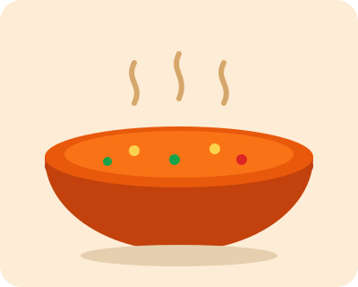

Welcome to
Fasanya Joshua's Kitchen
Home-style Nigerian cooking, made fresh every day. From smoky party jollof to rich egusi, every plate tastes like Sunday at home.

A little about us
Fasanya Joshua's Kitchen is a family-run restaurant in Lagos serving traditional Nigerian dishes made with fresh local ingredients and family recipes. Whether you are dining in, ordering takeaway, or planning a party, we cook with love.
Why people love us
- 🍲
Fresh daily
Cooked each morning with fresh ingredients.
- 🚚
Fast delivery
Hot meals delivered across Lagos.
- 🎉
Event catering
Weddings, birthdays and office parties.
Visit us today
Open Monday to Saturday, 10:00 AM – 9:00 PM.